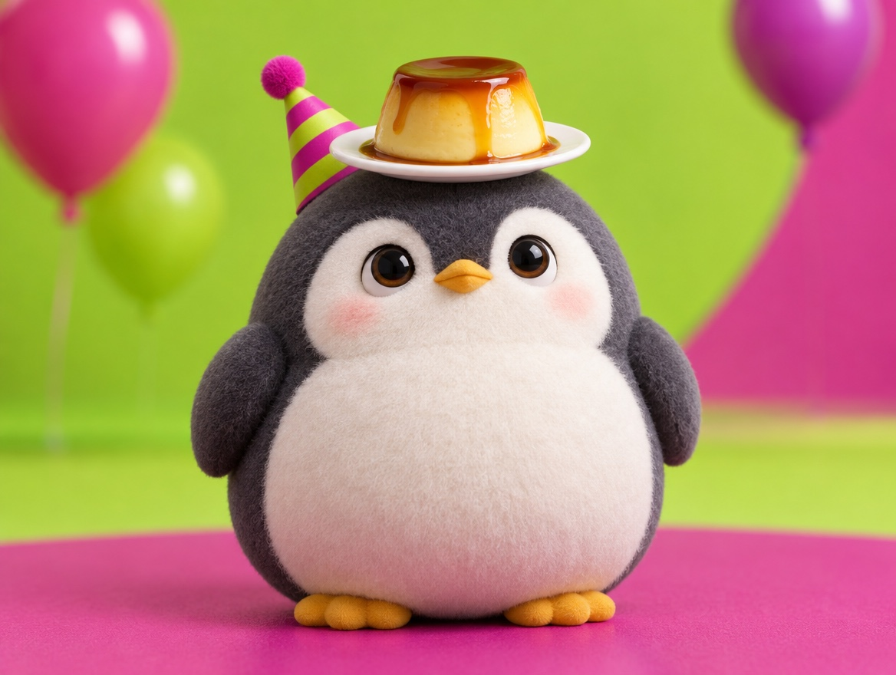

📝 DRAFT · 下書き — まだ本番に出していません · 下書き一覧
🐧 EVERYDAY LIFE⚡ 18 SEC
Do something silly very seriously, and your heart gets lighter 🎈

As Kids
When we were kids, we loved things with no meaning.
The Thin Rope
As adults, we walk on a thin rope called "common sense," trying not to fall.
⚡ TRY IT
Step off the rope of common sense
🎈 Lightness
❓ Spin to get a silly mission.
🍮 Find the best angle to eat pudding.
🐧 Walk to the fridge like a penguin.
👟 Say "Good night" to your shoes.
🪴 Give your plant a cool name.
✏️ Draw a cat with your other hand.
🧦 Fold your socks like origami.
☁️ Give today's clouds a score.
Life on the rope is a little tense…
A silly mission! Now do it with a very serious face.
🧐 Seriousness: 98% You stepped off the rope!
🎈 Light as a balloon! Silly things, done seriously, are the best.
Silly, Seriously
Sometimes, get off that rope and do something silly, very seriously.
Pudding Research
For example, study the best angle to eat pudding, for real.
Feel Light
Just that makes your heart feel light.
📚 I learned this from the Japanese blog "Panda no Ondo".